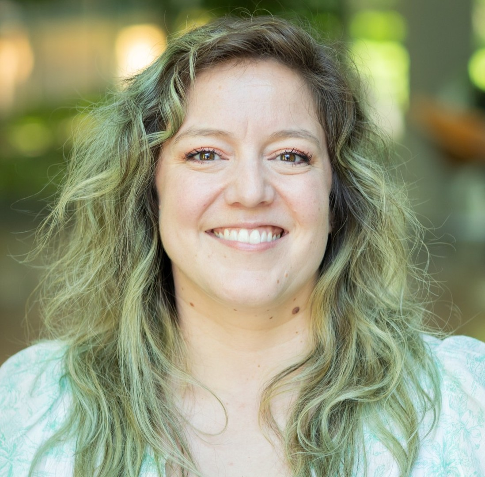
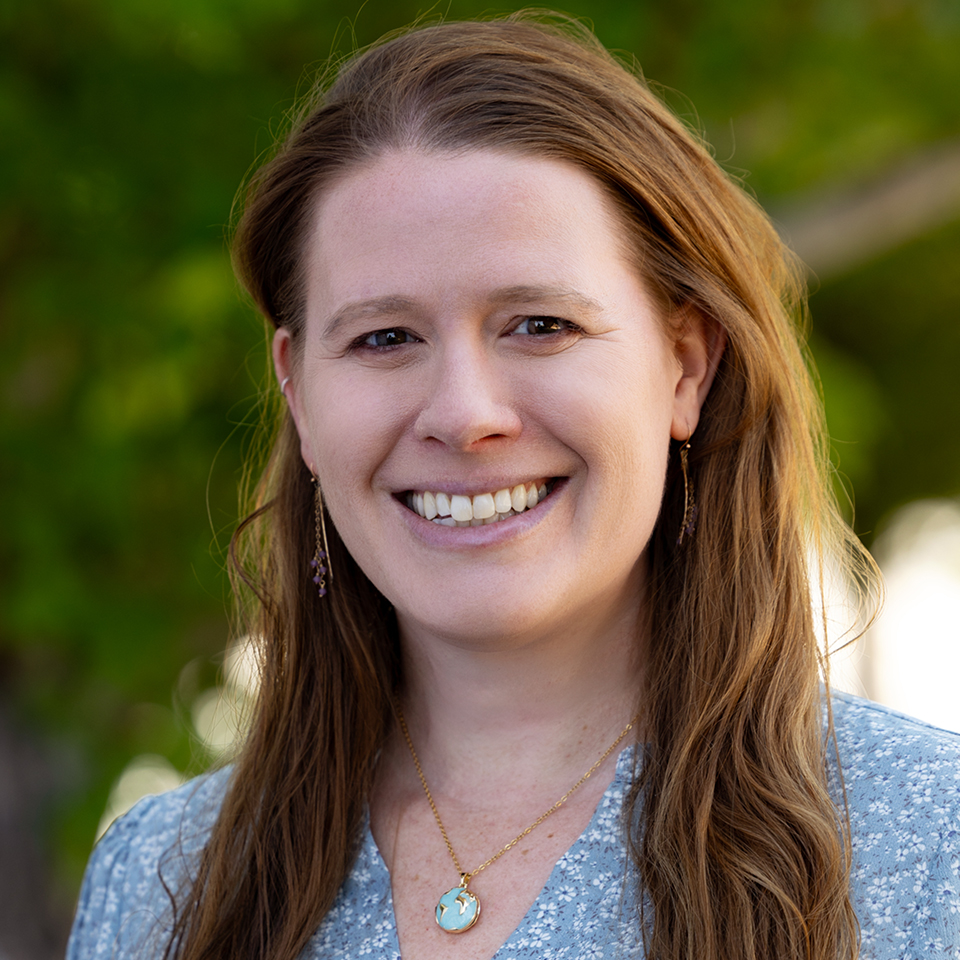
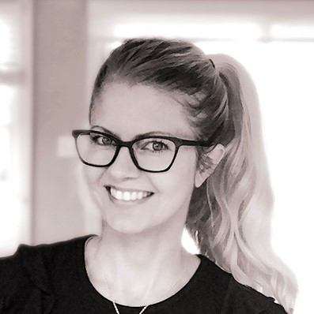
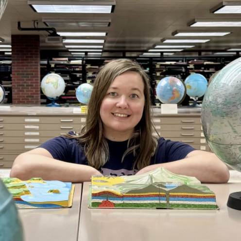

#CreativeCarto is the response to: "I never have time to try out, learn, create that [map, app, site, data, art]".
The 🔥Comeback🔥 is Sunday, Sept. 27th, 5pm EST!
Join the #CreativeCarto community every last Sunday of the month at 5pm EST to work on what you have been putting off! Connect via #creativeCarto hashtag on LinkedIn or
BlueSky, or via the NACIS or Spatial Community #creativeCarto slack channels.
Want some inspo? Check out what mappers have done before.
Hosts

Vanessa Knoppke-Wetzel is an award winning cartographer and is known for her expertise in map aesthetics over time, and what affects technological shifts has on design and product workflows; cartography and branding; mapping tools' UI/UX, product design, and user research; equity and inclusion; and accessibility design. Cartography also informed her expertise beyond the geospatial, informing her work in product and app builds, UI/UX, project management, and operational leadership. “Outside of work”, she brought positive lasting change to the North American Cartographic Information Society (NACIS) and the carto industry at large, such as making the industry more inclusive, including more accessible maps. "At work", Vanessa is currently a Solution Engineer at Esri. Portfolio, Blog, Bluesky

Alison DeGraff Ollivierre is an award-winning cartographer and certified GIS professional (GISP) with more than 15 years of experience at the intersection of science, technology, and design.
She works in outdoor recreation planning and design at SE Group, runs her own freelance practice, Tombolo Maps & Design, and previously spent nearly a decade making maps at National Geographic. Alongside her professional work, Aly has contributed extensively to participatory mapping and avian conservation in the Caribbean. She has volunteered as a mentor, organizer, and advocate within the cartographic community, while also using her mapping skills for humanitarian and community-focused projects. Aly is passionate about bringing people together through maps, sharing knowledge, and finding creative ways for cartography to make a difference (and be more fun!).
Portfolio, Bluesky

Sarah Bell is an award-winning cartographer and lead cartography engineer at Esri. With 19 years in the field, her career trajectory began at the University of Wisconsin-Madison, after which she worked as a cartographer for Mount Rainier National Park’s climbing division. Sarah then pursued her M.S. in Geography from Western Washington University. She has been at Esri for the past 14 years, where she connects with geospatial professionals and creates static and interactive maps and data visualization. As someone with a passion for sharing geospatial visualization with anyone who wants to learn, Sarah gives keynotes, tutorials, and hosts her own tutorial Youtube. Portfolio, Behance

Vicky Johnson-Dahl a professional cartographer and geospatial analyst with nearly two decades of experience creating maps, tools, and visualizations, largely in the disaster recovery and international development domains.
She has worked across complex environments, including Afghanistan, Iraq, Moldova, Syria, and Ukraine, translating large, often imperfect datasets into clear, accurate, actionable visual products.
Over the course of her career, she has established cartographic standards and workflows, developed design practices, trained and mentored other GIS professionals, and
helped organizations build sustainable geospatial capabilities from the ground up. She is the President of the North American Cartographic Information Society, a published author,
a two-time juror for the Atlas of Design, and a frequent conference speaker. Portfolio, Bluesky
About #CreativeCarto
In 2018, Vanessa Knoppke-Wetzel founded #CreativeCarto as a virtual time and space for people to join from around the world, come together, and make time to build, try new things, create, and generally do what we often say we want to do but don't have time for... while also getting to connect with others online. Making the time to create while also having the opportunity to connect with others, share, ask questions, and see the creativity of others is a wonderful way to build community and get inspired at the same time.
Can't make the time and date? Don't worry - #creativeCarto is meant to be a place we chat and share throughout every month! Share your ideas, questions, and progress via the hashtag or slack channel: we are a community across time zones!
The 2026 #CreativeCarto Comeback will bring back the monthly community gathering: but this time, with four hosts! Additionally, #creativeCarto will post videos on Youtube teaching about cartographic workflows for print and web maps, web mapping applications and tools, best practices, and so much more! #CreativeCarto will also post interviews with expert cartographers from around the world, to showcase what different cartographers do, how they got to where they are, and highlight tips and tricks from them as well. All of these videos will also be cross-posted to LinkedIn, Bluesky, and Slack channels as well.
{kind=link}
{kind=link}
{kind=link}
{kind=link}
{kind=link}
{kind=link}
{kind=link}
{kind=link}
{kind=link}
{kind=link}
{kind=link}
{kind=link}
{kind=link}
{kind=link}
{kind=link}
{kind=link}